GPU Memory
Memory hierarchy (host)
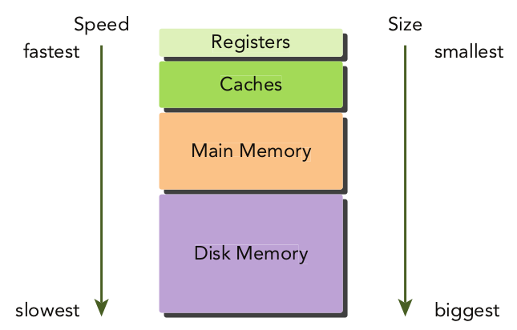
Caches and registers are non-programmable.
Memory hierarchy (GPU)

All non-cache memory spaces are programmable.
Registers
- Fastest type of memory. Most local variables (declared within a kernel) are stored in registers.
- Register variables are private to each thread.
- Registers are partitioned among active warps in an SM. Fermi GPUs have max. 63 registers per thread, Kepler 255.
Registers
Hardware resources used by a kernel can be checked with nvcc options.
This command prints the number of registers, bytes of shared memory and bytes of constant memory used by each thread:
-Xptas="-v"
This passes the option -v to the PTXAS assembler.
(Compilation process: CUDA $\xrightarrow{\text{nvcc}}$ PTX $\rightarrow$ binary code for the GPU)
Registers
- If a kernel uses more registers than the hardware limit, local memory will be used instead.
- This is called register spilling.
- The compiler will try to avoid register spilling, but this can be assisted using the following option in the kernel definition:
__global__ void
__launch_bounds__(maxThreadsPerBlock, minBlocksPerMultiprocessor)
kernel(...) {
// kernel body
}The maximum number of registers to be used by all kernels can be set at compile time using -maxrregcount=32.
This option is ignored by kernels that have __launch_bounds__ specified.
Local memory
- Kernel variables that cannot fit in registers are moved to local memory.
- "Local memory" is physically just global memory (high latency, low bandwidth).
- For compute capability >= 2.0, local memory data is cached on L1 (per SM) and L2 (per device).
Shared memory
- Variables declared in the kernel with
__shared__are stored in shared memory. - This memory is on-chip: high bandwidth, low latency.
- Each SM has a limited amount of shared memory, partitioned among thread blocks. If too much shared memory is used the number of active warps will be limited.
- Shared memory allows for inter-thread communication (within a block).
Constant memory
- Resides in device memory and is cached in a dedicated, per-SM constant cache.
- A constant variable is declared with
__constant__. - These must have global scope, outside of any kernels. 64KB is available.
- It is useful for mathematical constants that are applied by all threads.
- Kernels may only read from constant memory, so it must be initialised on the host:
cudaError_t cudaMemcpyToSymbol(const void* symbol, const void* src, size_t count);
Texture memory
- Resides in device memory and is cached in a per-SM, read-only cache.
- The data in texture memory can be interpolated as it is read, and is optimised for 2D spatial locality.
- This is useful in graphics applications where textures (surfaces) must be applied to objects.
- There are sometimes useful scientific applications of texture memory, but it is rare, so we will not discuss it further.
Global memory
- Main memory of the GPU, high latency, low bandwidth.
- Global memory can be declared statically (without use of allocation functions) in device code with
__device__. - Dynamic global memory allocation uses
cudaMalloc. - Efficient use of global memory is extremely important to optimise GPU code.
Variables and memory in CUDA
| Qualifier | Variable | Memory | Scope | Lifespan |
float var | Register | Thread | Thread | |
float var[100] | Local | Thread | Thread | |
__shared__ | float var[] | Shared | Block | Block |
__device__ | float var[] | Global | Global | Application |
__constant__ | float var[] | Constant | Global | Application |
Memory types
| Memory | On/off chip | Cached | Access | Scope | Lifespan |
| Register | On | N/A | R/W | 1 thread | Thread |
| Local | Off | CC > 2.0 | R/W | 1 thread | Thread |
| Shared | On | N/A | R/W | All threads in block | Block |
| Global | Off | CC > 2.0 | R/W | All threads + host | Host allocation |
| Constant | Off | Yes | R | All threads + host | Host allocation |
| Texture | Off | Yes | R | All threads + host | Host allocation |
Static global memory
#include <cuda_runtime.h>
#include <stdio.h>
__device__ float devData;
__global__ void checkGlobalVariable()
{
// display the original value
printf("Device: the value of the global variable is %f\n", devData);
// alter the value
devData += 2.0f;
}
int main(void)
{
// initialize the global variable
float value = 3.14f;
cudaMemcpyToSymbol(devData, &value, sizeof(float));
printf("Host: copied %f to the global variable\n", value);
// invoke the kernel
checkGlobalVariable<<<1, 1>>>();
// copy the global variable back to the host
cudaMemcpyFromSymbol(&value, devData, sizeof(float));
printf("Host: the value changed by the kernel to %f\n", value);
cudaDeviceReset();
return EXIT_SUCCESS;
}The host and device code live in different worlds: the host code cannot directly access a device variable, and device code cannot directly access a host variable. The CUDA API function calls must be used, as shown above.
Memory management
Memory allocation
cudaError_t cudaMalloc(void **devPtr, size_t count);cudaError_t cudaMemset(void *devPtr, int value, size_t count);cudaError_t cudaFree(void *devPtr);
Allocation/deallocation are expensive, so memory should be reused when possible.
Memory transfer
cudaError_t cudaMemcpy(void *dst, const void *src, size_t count, enum cudaMemcpyKind kind);
cudaMemcpyHostToHostcudaMemcpyHostToDevicecudaMemcpyDeviceToHostcudaMemcpyDeviceToDevice
Example of memory transfer
#include <cuda_runtime.h>
#include <stdio.h>
int main(int argc, char **argv) {
// set up device
int dev = 0;
cudaSetDevice(dev);
// memory size
unsigned int isize = 1<<22;
unsigned int nbytes = isize * sizeof(float);
// get device information
cudaDeviceProp deviceProp;
cudaGetDeviceProperties(&deviceProp, dev);
printf("%s starting at ", argv[0]);
printf("device %d: %s memory size %d nbyte %5.2fMB\n", dev, deviceProp.name,isize,nbytes/(1024.0f*1024.0f));
// allocate the host memory
float *h_a = (float *)malloc(nbytes);
// allocate the device memory
float *d_a;
cudaMalloc((float **)&d_a, nbytes);
// initialize the host memory
for(unsigned int i=0;i<isize;i++) h_a[i] = 0.5f;
// transfer data from the host to the device
cudaMemcpy(d_a, h_a, nbytes, cudaMemcpyHostToDevice);
// transfer data from the device to the host
cudaMemcpy(h_a, d_a, nbytes, cudaMemcpyDeviceToHost);
// free memory
cudaFree(d_a);
free(h_a);
// reset device
cudaDeviceReset();
return EXIT_SUCCESS;
}Memory transfer

Example for a Fermi C2050 GPU
Pinned memory
- Host memory is, by default, pageable.
- This means the memory is organised in pages that can be moved by the operating system within the virtual memory space that includes disk memory.
- When data is requested from RAM that has been moved to disk, a page fault occurs, and the data is moved from the disk back to main memory.
- The GPU has no control over when the OS might move pageable memory.
- Transfer from host to device involves allocation of page-locked or pinned memory on the host. Data is transferred from pageable to pinned, and then to the device.
Pinned memory
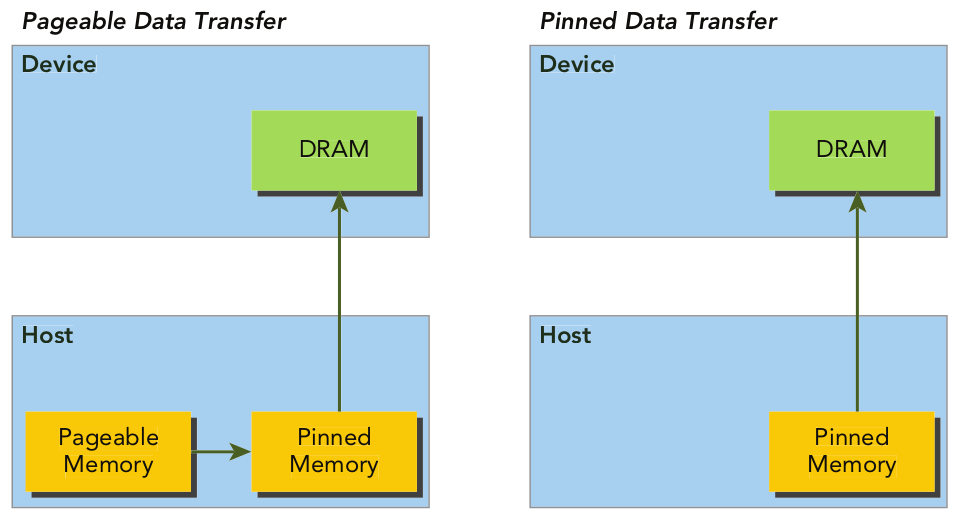
Allocation of pinned memory
cudaError_t cudaMallocHost(void **devPtr, size_t count);cudaError_t cudaFreeHost(void *ptr);
Using too much pinned memory can affect the overall system performance, because it reduces the virtual (pageable) memory space.
Example code: pinnedMemoryTransfer.cu
Unified memory
- From CUDA 6.0, Unified Memory allows access to memory in one single address space for both CPU and GPU.
- UM migrates data between host and device, automatically.
- Depends on Unified Virtual Addressing (introduced in CUDA 4.0) which unified the memory address space.
Static declaration of a device variable in unified (sometimes called managed) memory: __device__ __managed__ int y;
Dynamic allocation of unified memory: cudaError_t cudaMallocManaged(void **devPtr, size_t size, unsigned int flags=0);. The pointer devPtr is valid on the device and the host.
Memory access patterns
Global memory access
Global memory access passes through L2 cache (32-byte cache line) and possibly L1 cache (128-byte cache line) depending on access type and GPU architecture.
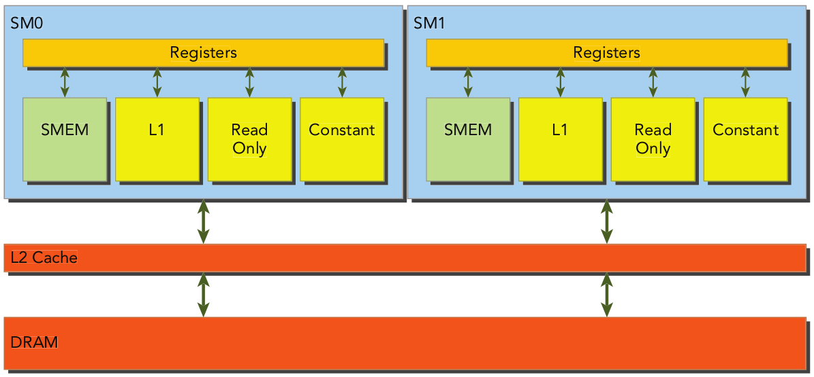
Aligned and coalesced access
- Global memory access should be aligned and coalesced.
- Aligned: first address of a device memory transaction is an even multiple of 32 (bytes) for L2 cache or 128 bytes for L1 cache.
- Coalesced: when all 32 threads in a warp access a contiguous chunk of memory.
Aligned and coalesced access

In this example, a single 128-byte memory transaction is required to read data from device memory.
Misaligned and uncoalesced access
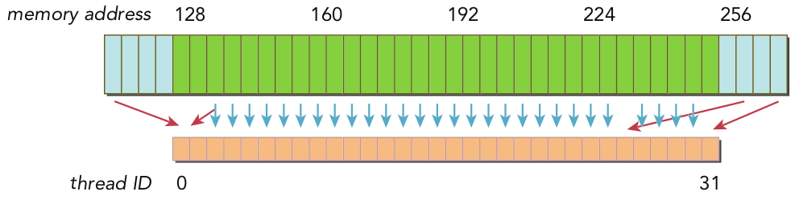
In this example, 3 128-byte transactions may be needed, one starting at offset 0 to get the first 2 data values, one starting at offset 256 to get the last 2, and one at offset 128 to get most of the data. Data values are also not contiguous.
Memory load types
- Cached loads: passes through L1 cache, memory request is 128-byte transaction. On an L1 miss the request goes to L2. On an L2 miss we go to DRAM (
-Xptxas -dlcm=caenables L1 cache) - Uncached loads: L1 cache not used, on an L2 miss we go to DRAM (
-Xptxas -dlcm=cgdisables L1 cache)
Cached loads

Aligned, coalesced, 100% utilisation of bus, no unused data
Cached loads

Aligned, non-coalesced, 100% utilisation of bus, no unused data (assuming each thread accesses a different value)
Cached loads

Misaligned, two 128-byte segments loaded, 50% bus utilisation, half unused.
Cached loads
Misaligned, two 128-byte segments loaded, 50% bus utilisation, half unused.
Cached loads

Misaligned, one 128-byte segment loaded, but only one (4-byte) value needed, bus utilisation is $4/128 = 3.125$%.
Cached loads

Misaligned, $N$ 128-byte segments loaded (where $0 < N \leq 32$), $N$ memory transactions for one load.
Uncached loads ($32$-byte segments)
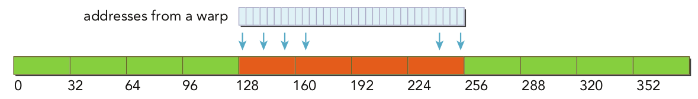
Aligned and coalesced.
Uncached loads
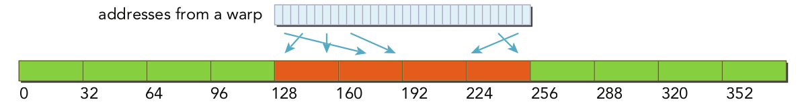
Aligned, non-coalesced, but no loads are wasted.
Uncached loads
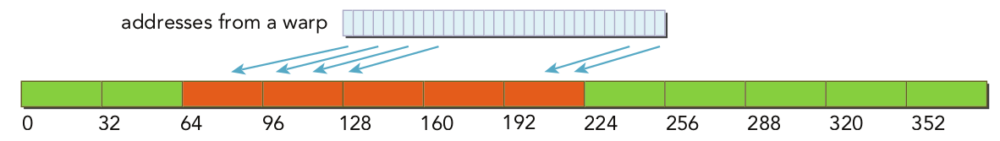
Misaligned, coalesced, requires at most $5$ segments, so bus utilisation is at least 80% (improvement over cached load).
Uncached loads
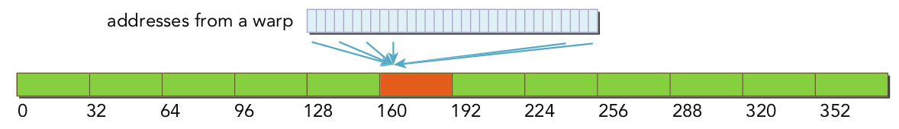
Misaligned, single 4 byte value requested, bus utilisation is $4/32=12.5$% (improvement over cached load).
Uncached loads
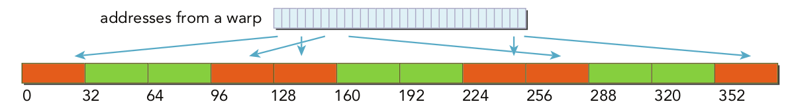
Misaligned, uncoalesced, requires at most $N$ 32-byte segments, rather than $N$ 128-byte cache lines (improvement over cached load).
Memory alignment example
We return to the vector addition example to see the effect of forcing misalignment...
Profiler: nvprof --metrics gld_efficiency ./readSegment.x
void sumArraysOnHost(float *A, float *B, float *C, const int n, int offset)
{
for (int idx = offset, k = 0; idx < n; idx++, k++)
{
C[k] = A[idx] + B[idx];
}
}
__global__ void readOffset(float *A, float *B, float *C, const int n,
int offset)
{
unsigned int i = blockIdx.x * blockDim.x + threadIdx.x;
unsigned int k = i + offset;
if (k < n) C[i] = A[k] + B[k];
}Memory writes
- Writes are done with 32-byte segments.
- Can be 1, 2 or 4 segment transactions.
Ideal case:
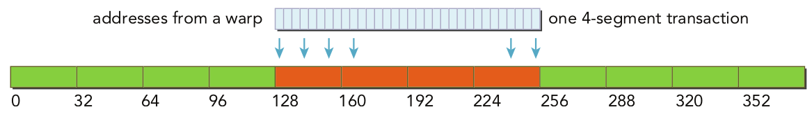
Memory writes
3 32-byte transactions

Memory writes
One two-segment transactions

Misaligned writes example
__global__ void writeOffset(float *A, float *B, float *C, const int n, int offset) {
unsigned int i = blockIdx.x * blockDim.x + threadIdx.x;
unsigned int k = i + offset;
if (k < n) C[k] = A[i] + B[i];
}void sumArraysOnHost(float *A, float *B, float *C, const int n, int offset) {
for (int idx = offset, k = 0; idx < n; idx++, k++) {
C[idx] = A[k] + B[k];
}
}Misaligned writes example
Memory write efficiency can be checked with:
Profiler: nvprof --metrics gst_efficiency ./writeSegment.x
AoS vs. SoA
Array of structures:
struct innerStruct {
float x;
float y;
};In code use struct innerStruct myAoS[N];
AoS vs. SoA
Structure of arrays:
struct innerArray {
float x[N];
float y[N];
};In code use struct innerArray mySoA;
AoS vs. SoA
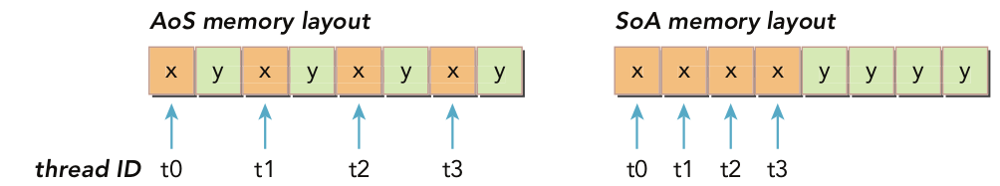
In most parallel programming situations (including CUDA), SoA is the preferred method.
Simple math with AoS
__global__ void testInnerStruct(innerStruct *data, innerStruct *result, const int n) {
unsigned int i = blockIdx.x * blockDim.x + threadIdx.x;
if (i < n) {
innerStruct tmp = data[i];
tmp.x += 10.f;
tmp.y += 20.f;
result[i] = tmp;
}
}Full code in simpleMathAoS.cu.
Simple math with SoA
__global__ void testInnerArray(innerArray *data, innerArray *result, const int n) {
unsigned int i = blockIdx.x * blockDim.x + threadIdx.x;
if (i<n) {
float tmpx = data->x[i];
float tmpy = data->y[i];
tmpx += 10.f;
tmpy += 20.f;
result->x[i] = tmpx;
result->y[i] = tmpy;
}
}Full code in simpleMathSoA.cu.
Comparing memory access
nvprof --metrics gld_efficiency,gst_efficiency ./simpleMath___
For AoS: gld_efficiency, gst_efficiency 50.00%
For SoA: gld_efficiency, gst_efficiency 100.00%
Unrolling techniques
Returning to the misaligned reads example, we will add some unrolling (over blocks as before):
__global__ void readOffsetUnroll4(float *A, float *B, float *C, const int n, int offset) {
unsigned int i = blockIdx.x * blockDim.x * 4 + threadIdx.x;
unsigned int k = i + offset;
if (k + 3 * blockDim.x < n) {
C[i] = A[k]
C[i + blockDim.x] = A[k + blockDim.x] + B[k + blockDim.x];
C[i + 2 * blockDim.x] = A[k + 2 * blockDim.x] + B[k + 2 * blockDim.x];
C[i + 3 * blockDim.x] = A[k + 3 * blockDim.x] + B[k + 3 * blockDim.x];
}
}Full code in readSegmentUnroll.cu.
Unrolling techniques
Checking the load/store efficiency (gld/gst_efficiency)shows unrolling has no impact.
Unrolling increases the number of concurrently in-flight memory operations.
The number of load/store transactions (gld/gst_transactions) is significantly reduced in the unrolled kernel.
Use of bandwith

Maximum bandwidth
Theoretical bandwidth: set by the hardware of the device.
Effective bandwidth (EB): set by the kernel.
$$\text{EB} = \frac{\text{(bytes read + bytes written)} \times 10^{-9}}{\text{time elapsed}}$$
Studying bandwidth use: matrix transpose

Host code for transpose (out-of-place)
void transposeHost(float *out, float *in, const int nx, const int ny) {
for (int iy = 0; iy < ny; ++iy) {
for (int ix = 0; ix < nx; ++ix) {
out[ix*ny+iy] = in[iy*nx+ix];
}
}
}Memory access for transpose

- Read: original matrix accessed by rows, coalesced access.
- Writes: transpose accessed by columns, strided access.
Transpose on the GPU
Strided access is the worst access pattern on a GPU, but unavoidable here.
We will now consider two kernel versions:
- Reads by rows, stores by columns
- Reads by columns, stores by rows
Transpose on the GPU, method 1
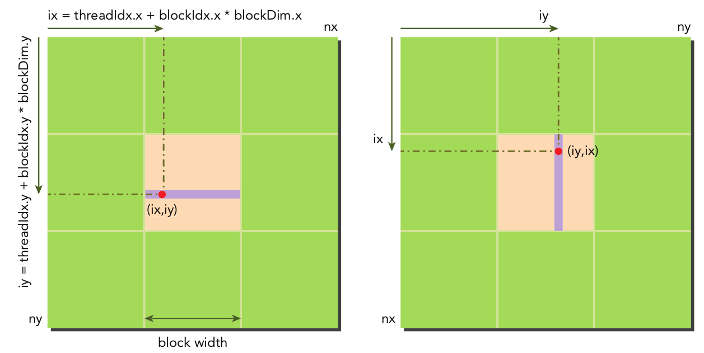
Transpose on the GPU, method 2
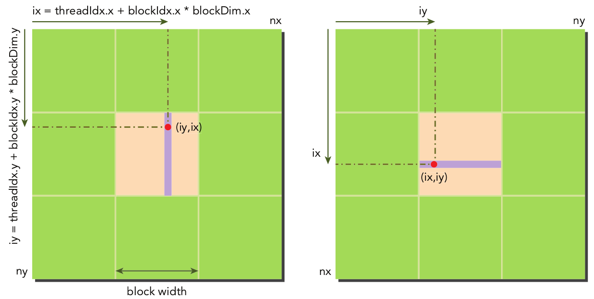
Transpose on the GPU
The two implementations are identical if L1 cache is disabled.
If L1 is enabled, reads by column will be cached, meaning next read may be serviced by cache (rather than global).
Writes are not cached in L1, so writing by column will not benefit from caching.
On GPUs where L1 cache is not used for global memory access, there will be no difference.
Transpose on the GPU: setting performance bounds
To have an idea of the maximum and minimum memory efficiency we can achieve we will use two kernels that copy matrices:
- The first version loads and stores with rows (only coalesced access).
- The second version loads and stroes with columns (strided access).
Transpose on the GPU: setting performance bounds
__global__ void copyRow(float *out, float *in, const int nx, const int ny) {
unsigned int ix = blockDim.x * blockIdx.x + threadIdx.x;
unsigned int iy = blockDim.y * blockIdx.y + threadIdx.y;
if (ix < nx && iy < ny) {
out[iy*nx + ix] = in[iy*nx + ix];
}
}Transpose on the GPU: setting performance bounds
__global__ void copyCol(float *out, float *in, const int nx, const int ny) {
unsigned int ix = blockDim.x * blockIdx.x + threadIdx.x;
unsigned int iy = blockDim.y * blockIdx.y + threadIdx.y;
if (ix < nx && iy < ny) {
out[ix*ny + iy] = in[ix*ny + iy];
}
}Transpose on the GPU: setting performance bounds
Full code in transpose.cu.
Code is run with integer argument to select the kernel: ./transpose.cu <int>. The value of <int> switches the kernel.
On my laptop CopyRow kernel has effective bandwidth of 64.2 GB/s, CopyCol kernel has 14.1 GB/s. (Theoretical maximum of my GeForce GTX 960M GPU is 80.19 GB/s).
Transpose on the GPU: comparing methods
| Kernel method | Time | Bandwidth | Ratio to peak |
| Load rows/store columns | 0.001756 s | 19.1 GB/s | 24% |
| Load columns/store rows | 0.000920 s | 36.5 GB/s | 46% |
Transpose on the GPU: comparing methods
Load/store efficiency can be checked with the following nvprof metrics: gld_efficiency,gst_efficiency.
For ncu the equivalent metrics are:
smsp__sass_average_data_bytes_per_sector_mem_global_op_ld.pctsmsp__sass_average_data_bytes_per_sector_mem_global_op_st.pct
Matrix addition with unified memory
We return to the matrix addition example, this time using unified memory.
Full code is in sumMatrixGPUManaged.cu. This can be compared with the standard approach in sumMatrixGPU.cu.
We can check time of API calls using nvprof or nsys profile --stats true.
Shared memory
Shared memory

Shared memory
- Shared memory can be declared statically or dynamically.
- May be local to a kernel or globally in a source file.
- Shared memory arrays may be 1D, 2D or 3D.
Shared memory - static declaration
This code statically declares a shared 2D float array:
__shared__ float tile[size_y][size_x];If declared inside a kernel this will be local to that kernel, if declared outside any kernel it will be global to all kernels.
Shared memory - dynamic declaration
This code dynamically declares a shared 2D float array:
extern __shared__ int tile[];The size of this array is set when the kernel is invoked by passing a third argument in the kernel configuration:
kernel<<<grid, block, isize * sizeof(int)>>>(...)Only 1D arrays may be declared dynamically.
Shared memory banks
- Shared memory is divided into 32 equal-sized modules called banks which can be accessed simultaneously.
- When a warp issues a shared memory transaction request there are three possibilities:
- Parallel access: multiple addresses accessed across multiple banks (ideal case)
- Serial access: multiple addresses accessed within the same bank (worst case, bank conflict)
- Broadcast access: single address read in a single bank
Shared memory banks - parallel access

Shared memory banks - parallel access

Shared memory banks - broadcast access?
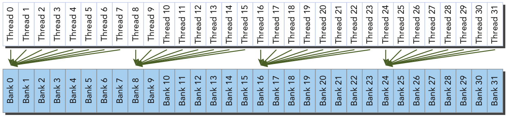
If the memory addresses differ in each bank, then there will be a bank conflict.
Shared memory banks

This shows the mapping between word indices and the memory banks for 4-byte bank width.
Shared memory banks
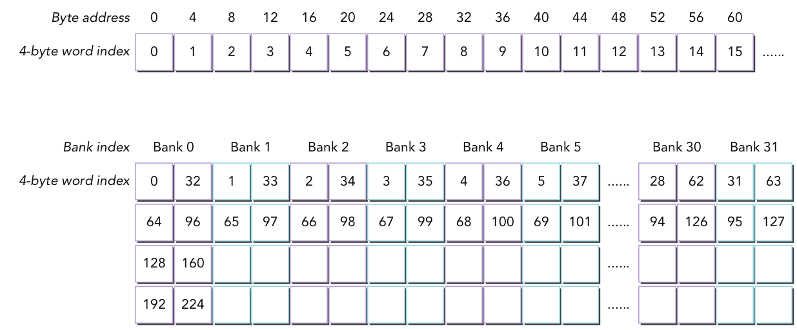
This shows the mapping between word indices and the memory banks for 8-byte bank width (for GPUs of compute capability 3.x or higher).
No bank conflicts

All accesses are to different banks (8-byte bank width example).
No bank conflicts
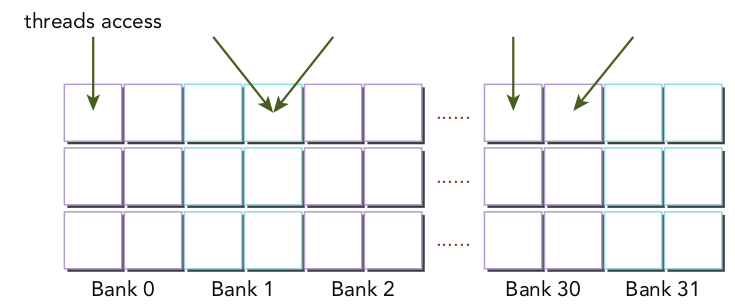
Accesses to the same bank, but these may be served by a single memory transaction.
Bank conflict

Accesses to the same bank (2-way conflict), cannot be served by a single memory transaction.
Bank conflict
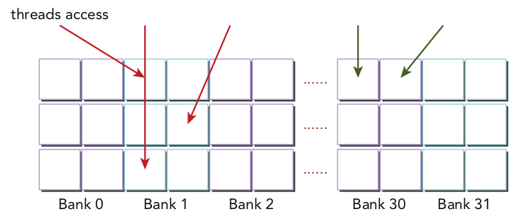
Accesses to the same bank (3-way conflict), cannot be served by a single memory transaction.
Memory padding
Bank conflicts can be avoided using memory padding. The following example shows the idea, assuming 5 memory banks.
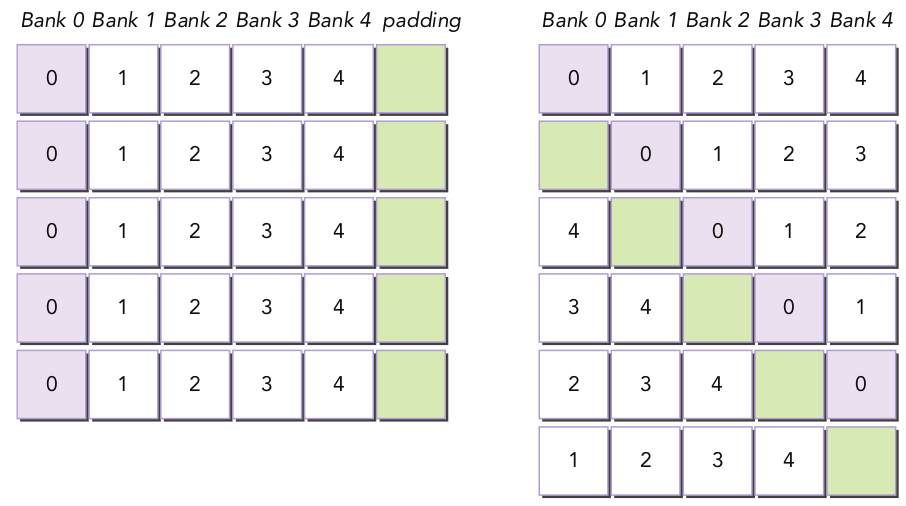
Example: square shared memory
We will consider a $32 \times 32$ shared memory array.

Example: square shared memory
We can statically declare a 2D shared memory array using:
__shared__ int tile[N][N]Accessing this from a 2D thread block is straightforward. We can use either of the following access patterns:
tile[threadIdx.y][threadIdx.x]
tile[threadIdx.x][threadIdx.y]Which is likely to be faster?
Example: square shared memory
- The ideal case is to have threads in the same warp accessing different memory banks.
- Threads in the same warp have consecutive values of
threadIdx.x. - Memory banks are indexed consecutively.
- We would therefore expect
tile[threadIdx.y][threadIdx.x]to exhibit better performance.
Kernel example: no bank conflicts
__global__ void setRowReadRow(int *out) {
// static shared memory
__shared__ int tile[BDIMY][BDIMX];
// mapping from thread index to global memory index
unsigned int idx = threadIdx.y * blockDim.x + threadIdx.x;
// shared memory store operation
tile[threadIdx.y][threadIdx.x] = idx;
// wait for all threads to complete
__syncthreads();
// shared memory load operation
out[idx] = tile[threadIdx.y][threadIdx.x] ;
}Three memory operations: store on shared memory, load on shared memory, store on global memory.
Kernel example: bank conflicts
__global__ void setColReadCol(int *out) {
// static shared memory
__shared__ int tile[BDIMX][BDIMY];
// mapping from thread index to global memory index
unsigned int idx = threadIdx.y * blockDim.x + threadIdx.x;
// shared memory store operation
tile[threadIdx.x][threadIdx.y] = idx;
// wait for all threads to complete
__syncthreads();
// shared memory load operation
out[idx] = tile[threadIdx.x][threadIdx.y];
}Shared memory access will result in 32-way bank conflicts for 4-byte bank width, 16-way for 8-byte.
Kernel example: bank conflicts
Full code in checkSmemSquare.cu.
Metrics for profiler: shared_load_transactions_per_request, shared_store_transactions_per_request.
No equivalents of these for ncu but shared_efficiency has the equivalent smsp__sass_average_data_bytes_per_wavefront_mem_shared.pct.
Shared memory examples
The same code includes multiple kernels:
- setRowReadRow: reads and writes shared memory with row-major order.
- setColReadCol: reads and writes shared memory with column-major order.
- setRowReadCol: writes with row-major, reads with column-major.
- setRowReadColDyn: dynamic shared memory allocation (requires offsets as dynamic allocation must be 1D).
- setRowReadColPad: static shared memory with padding.
- setRowReadColDynPad: dynamic shared memory with padding (offsetting must be modified to skip padded memory spaces).
Matrix transpose with shared memory
We return to the matrix transpose example to use shared memory to avoid uncoalesced access to global memory. The global memory transpose kernel is:
__global__ void naiveGmem(float *out, float *in, const int nx, const int ny) {
// matrix coordinate (ix,iy)
unsigned int ix = blockIdx.x * blockDim.x + threadIdx.x;
unsigned int iy = blockIdx.y * blockDim.y + threadIdx.y;
// transpose with boundary test
if (ix < nx && iy < ny) {
out[ix*ny+iy]= in[iy*nx+ix];
}
}Global memory write operation is strided.
Copy kernel
The maximum performance achievable would correspond to a copy kernel:
__global__ void copyGmem(float *out, float *in, const int nx, const int ny) {
// matrix coordinate (ix,iy)
unsigned int ix = blockIdx.x * blockDim.x + threadIdx.x;
unsigned int iy = blockIdx.y * blockDim.y + threadIdx.y;
// transpose with boundary test
if (ix < nx && iy < ny) {
out[iy*nx+ix]= in[iy*nx+ix];
}
}All memory access is coalesced in this case.
Matrix transpose (global memory)
Full example code in transposeRectangle.cu.
Metrics: gld_transactions_per_request (and the equivalent for stores).
Strided access leads to more global memory transactions per request.
Matrix transpose with shared memory

The transpose occurs in shared memory. Simple implementation would result in bank conflicts, but this is still faster than uncoalesced global memory access.
Matrix transpose with shared memory
__global__ void transposeSmem(float *out, float *in, int nx, int ny) {
// static shared memory
__shared__ float tile[BDIMY][BDIMX];
// coordinate in original matrix
unsigned int ix,iy,ti,to;
ix = blockIdx.x *blockDim.x + threadIdx.x;
iy = blockIdx.y *blockDim.y + threadIdx.y;
// linear global memory index for original matrix
ti = iy*nx + ix;
// thread index in transposed block
unsigned int bidx,irow,icol;
bidx = threadIdx.y*blockDim.x + threadIdx.x;
irow = bidx/blockDim.y;
icol = bidx%blockDim.y;
// coordinate in transposed matrix
ix = blockIdx.y * blockDim.y + icol;
iy = blockIdx.x * blockDim.x + irow;
// linear global memory index for transposed matrix
to = iy*ny + ix;
// transpose with boundary test
if (ix < nx && iy < ny)
{
// load data from global memory to shared memory
tile[threadIdx.y][threadIdx.x] = in[ti];
// thread synchronization
__syncthreads();
// store data to global memory from shared memory
out[to] = tile[icol][irow];
}
}Matrix transpose with shared memory
- A warp performs a coalesced read of a row from a block of the original matrix in global memory.
- The warp then writes data into shared memory with row-major ordering (no bank conflicts).
- Synchronisation of all read/write operations to ensure 2D shared array is filled correctly.
- The warp reads a column from the 2D sgared array (bank conflicts!)
- The warp then writes that data into a row of the transposed matrix in global memory (coalesced access).
Matrix transpose with shared memory
Full code in transposeRectangle.cu
Index calculation is more complex...
Indices used
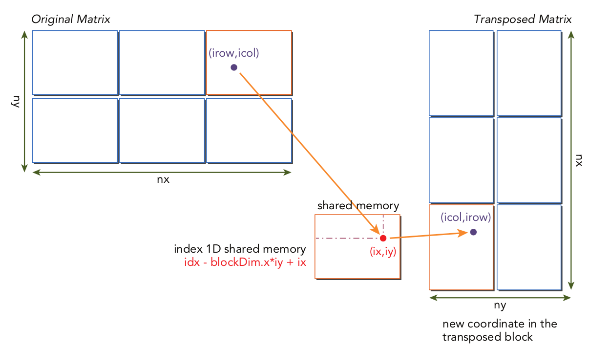
Matrix transpose with shared memory
Kernels may be further optimised with padding (to avoid bank conflicts) and unrolling to improve thread utilisation...
Constant memory
Constant memory
Read-only memory held on DRAM, but with an on-chip cache.
Limit of 64KB per SM.
Optimal access pattern is for all threads in a warp to access the same location in constant memory.
Constant memory
Constant variables are declared in global scope using __constant__. They exist for the lifetime of the application.
They must be initialised from host code: cudaError_t cudaMemcpyToSymbol(const void *symbol, const void *src, size_t count, size_t offset, cudaMemcpyKind kind)
Finite differencing example
We will consider a 1D nine-point finite differencing stencil (e.g. 8th-order first derivative)

$$f'(x) \approx c_0(f(x+4h)-f(x-4h)) + c_1(f(x+3h)-f(x-3h))$$
$$ - c_2(f(x+2h) - f(x-2h)) + c_3(f(x+h) - f(x-h))$$
Finite differencing example
Full code in constantStencil.cu
Constant memory can be used to store the coefficients $c_0$, $c_1$, $c_2$ and $c_3$ as they never change and are identical for all threads.
Finite differencing example
We need a "halo" of points on either side of the boundary points to be able to calculate the stencil (these points are more often referred to as "ghost zones").

Shared memory is used to reduce redundant global memory accesses (we reduce 9 points to 1): __shared__ float smem[BDIM + 2 * RADIUS] where RADIUS is the size of each ghost zone.
Finite differencing example
__global__ void stencil_1d(float *in, float *out) {
// shared memory
__shared__ float smem[BDIM + 2*RADIUS];
// index to global memory
int idx = threadIdx.x + blockIdx.x * blockDim.x;
// index to shared memory for stencil calculatioin
int sidx = threadIdx.x + RADIUS;
// Read data from global memory into shared memory
smem[sidx] = in[idx];
// read halo part to shared memory
if (threadIdx.x < RADIUS) {
smem[sidx - RADIUS] = in[idx - RADIUS];
smem[sidx + BDIM] = in[idx + BDIM];
}
// Synchronize (ensure all the data is available)
__syncthreads();
// Apply the stencil
float tmp = 0.0f;
#pragma unroll
for (int i = 1; i <= RADIUS; i++) {
tmp += coef[i] * (smem[sidx+i] - smem[sidx-i]);
}
// Store the result
out[idx] = tmp;
}Finite differencing example
The declaration of the coef array in constant memory is:
__constant__ float coef[RADIUS + 1];Initialisation of the values of coef is done with:
void setup_coef_constant(void) {
const float h_coef[] = {a0, a1, a2, a3, a4};
cudaMemcpyToSymbol(coef, h_coef, (RADIUS + 1) * sizeof(float));
}Warp shuffle
Warp shuffle
- Warp shuffles allow threads to read another thread's register (within the same warp).
- Data can be shared between threads without going through shared or global memory.
- Latency is lower than shared memory, and no extra memory is consumed for the data exchange.
Warp shuffle
- Shuffle instructions refer to lanes within a warp.
- A lane is simply a single thread within a warp.
- Each lane has a lane index between 0 and 31.
Warp shuffle
The lane index and warp index of a thread (in a 1D thread block) can be calculated using:
laneID = threadIdx.x % 32
warpID = threadIdx.x / 32Variants of the warp shuffle instruction
- There are two sets of shuffle instructions: one for integers and one for floats.
- Each set has four variants of the shuffle instruction.
- ...